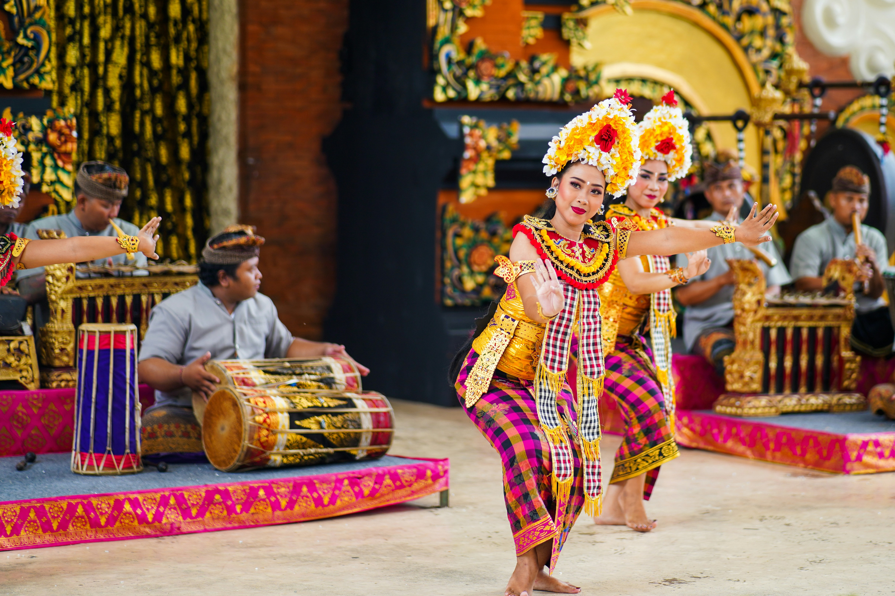
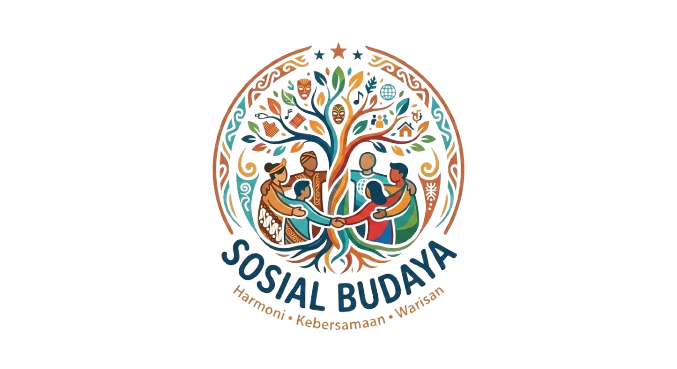
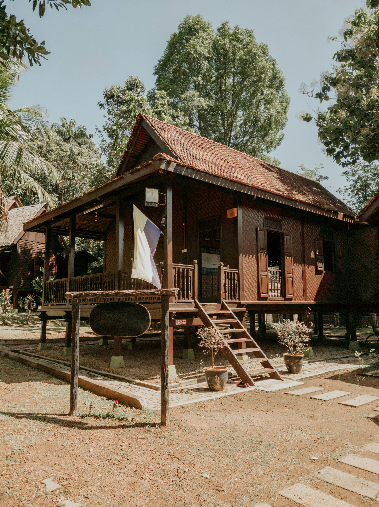
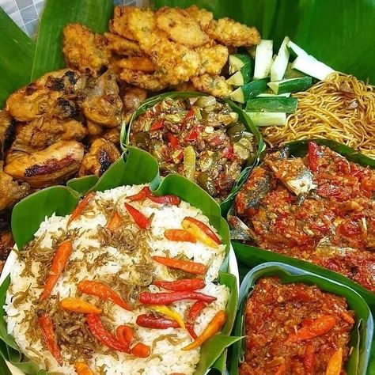

Tari Tradisional
Seni tari nusantara merefleksikan filosofi mendalam, ritme sakral, serta ekspresi estetika keanggunan budaya dari Sabang hingga Merauke.

Budaya IndonesiaPentingnya menjaga keluhuran budaya sebagai jati diri bangsa Indonesia.
Keberagaman budaya tradisional tercatat di seluruh pelosok nusantara, menjadi kekayaan tak ternilai yang mengakar sebagai kebanggaan kita bersama.

Pesona seni pertunjukan, ritme gamelan nan sakral, keelokan arsitektur rumah adat, serta cita rasa tradisi kuliner warisan leluhur nusantara.

Seni tari nusantara merefleksikan filosofi mendalam, ritme sakral, serta ekspresi estetika keanggunan budaya dari Sabang hingga Merauke.
Alunan harmonis gending gamelan, angklung, dan sasando yang sarat akan makna spiritual dan mengiringi ritual sakral kehidupan.

Kekayaan arsitektur vernakular adat nusantara yang memadukan keharmonisan dengan alam raya dan ketangguhan struktur tradisional.

Warisan rempah-rempah yang meracik kekayaan cita rasa autentik dan filosofi rasa syukur dalam kebersamaan masyarakat nusantara.
Budaya bukan sekadar mengalir di urat nadi,— BUDAYA NUSANTARA
bukan pula warisan mati yang berdiam sepi.
Ia menjelma hidangan hangat di meja hari ini,
ketika nurani paham, cinta memeluk, dan raga merawatnya penuh arti.
Sebuah karya seni visual dan keindahan abadi nusantara yang merekam pesona tradisi dan peradaban luhur bangsa.